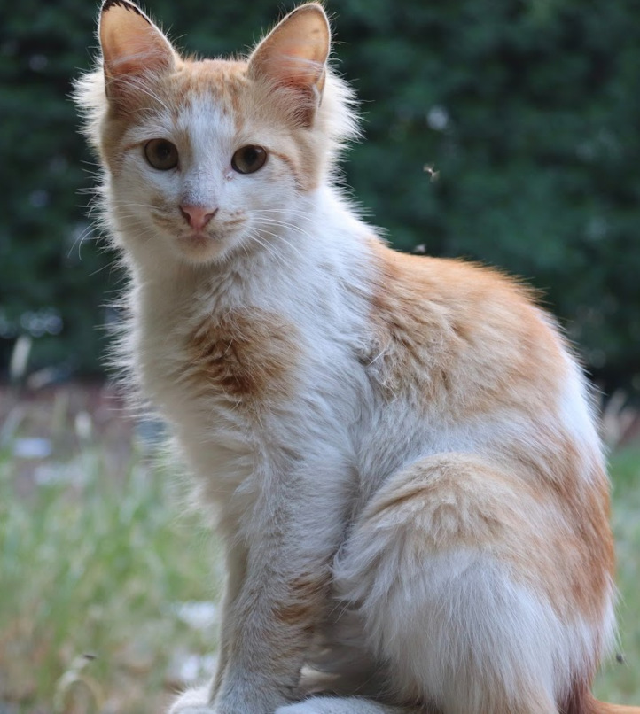
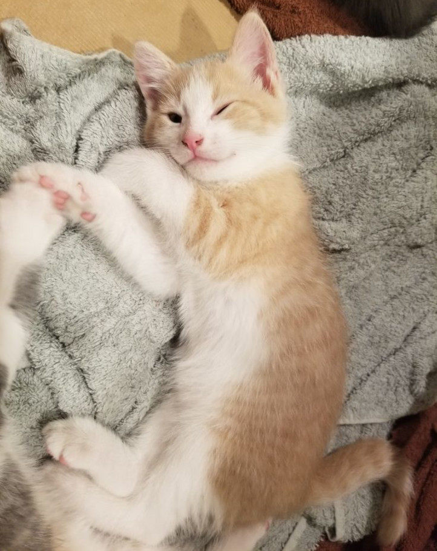

Name: Ash
Status: Looking for a new home
Info: A very quiet but snuggly cat. Ash is 4 years old and has been at the shelter for a month now. She loves to take naps and cuddle. She was surrendered to us by her previous owner.
Name: Milo
Status: I'm not ready yet
Info: A very independent and clever cat. Milo was found as an injured stray and we took him in. He is on the path to a speedy recovery but will need more time before he is ready to find his forever home. Milo is around 1 year old.
Name: Simon
Status: Looking for a new home
Info: A very vocal and attention loving kitten. Simon loves to sing and be pet, he loves attention and will follow you around meowing if you don't give him any. Simon was born at the shelter and is the last of his litter to be adopted. He is 2 months old now.